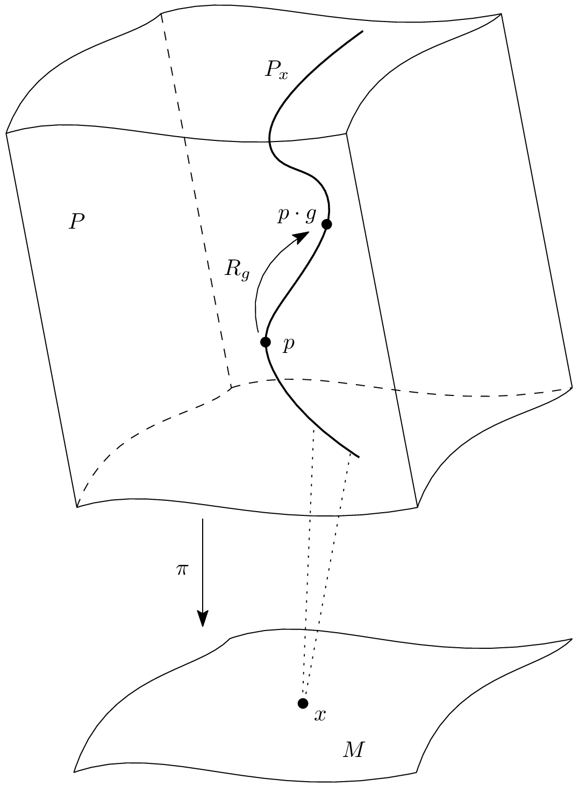
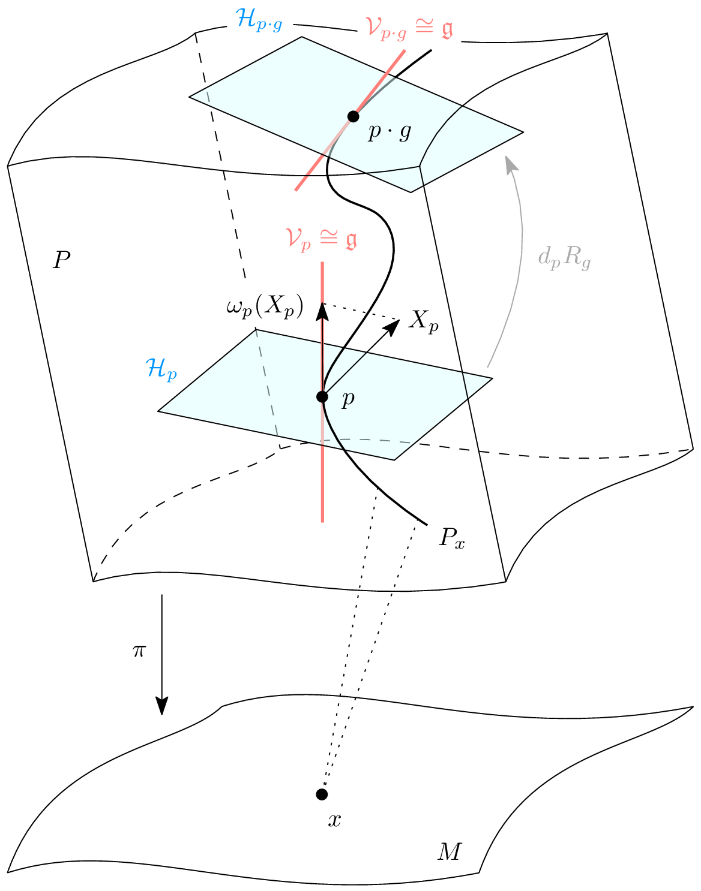
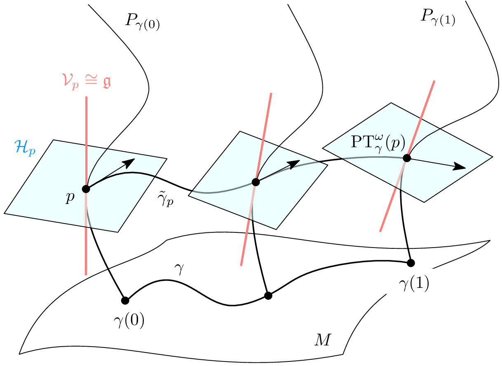
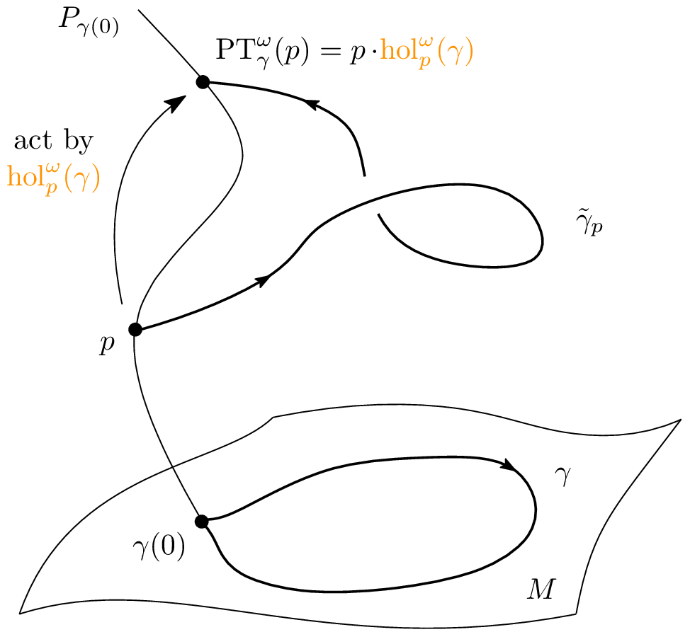
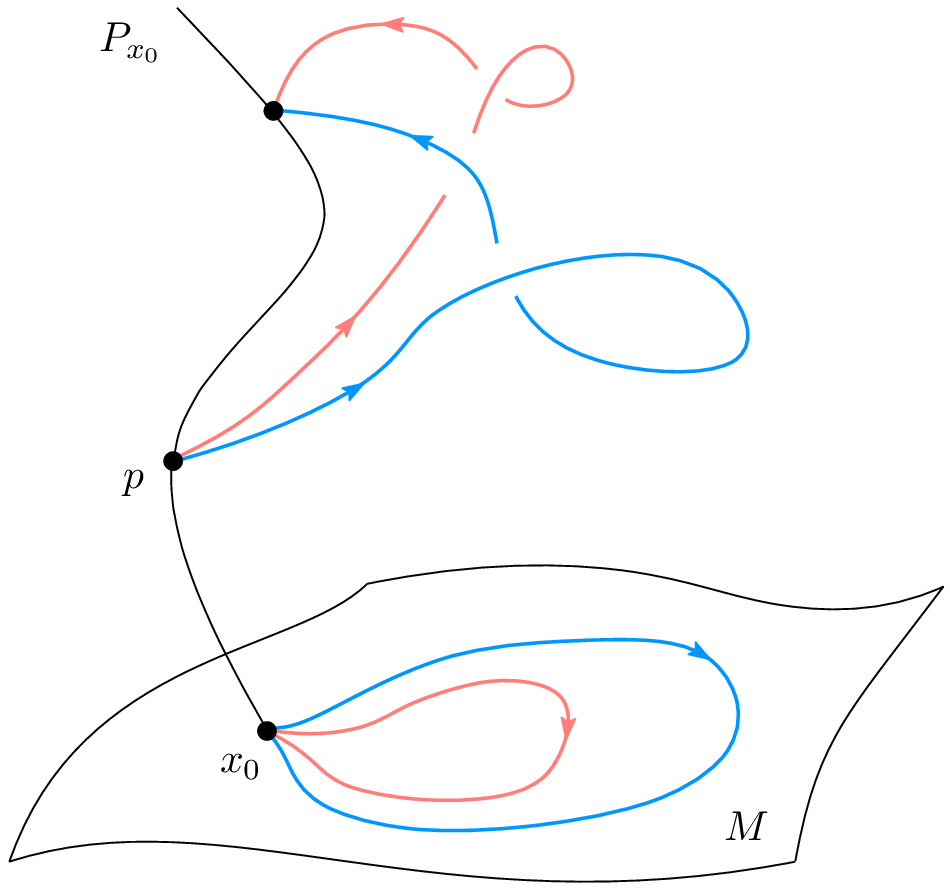

Introduction
This post is a short summary of my Bachelor's thesis in Mathematics, where I studied a geometric version of the Riemann–Hilbert correspondence. The main idea is that some geometric objects, namely principal bundles with flat connections, can be closely related to topological and algebraic objects: representations of the fundamental group. You can find the full thesis here. My supervisor was Dr. Ignasi Mundet i Riera (UB–CRM).
The Riemann–Hilbert correspondence is a central result at the intersection of differential geometry and algebraic topology. In its classical analytic form, it establishes a relationship between linear differential equations with regular singularities and representations of the fundamental group. Modern formulations in differential geometry reinterpret this correspondence as an equivalence between flat connections on principal $G$-bundles over a smooth manifold $M$ and representations of its fundamental group into $G$, modulo conjugation.
In this project, we develop a geometric exposition of this equivalence by following the conceptual path
$$ \text{Flat connections} \longleftrightarrow \text{Holonomy} \longleftrightarrow \text{Representations of the fundamental group}. $$
Preliminaries

To begin developing this correspondence, we first need to introduce the mathematical structure that describes continuous symmetries: Lie groups. These objects are smooth manifolds equipped with a group structure whose multiplication and inversion operations are differentiable. It is therefore no surprise that they are ubiquitous in modern differential geometry and mathematical physics, where they provide the natural framework for describing how the symmetries of a space vary differentiably along its geometry.
This idea of assigning the relevant symmetries to each point of a manifold leads naturally to the notion of a principal bundle. Given a Lie group $G$, a principal $G$-bundle $\pi\colon P \to M$ is a space that is locally diffeomorphic to a product $U \times G$, where $U \subset M$, but which may globally have richer topology, with twists that are invisible at the local level. At the same time, $G$ acts on $P$ on the right in a differentiable, free, $G$-equivariant way, preserving the fibers.

Once this structure has been defined, a natural question arises: how can we compare fibers lying over different points of the base manifold? The answer is the notion of a connection: a $1$-form $\omega \in \Omega^1(P,\mathfrak{g})$ that allows us to distinguish horizontal directions in $P$ as a complement to the natural vertical directions given by $\ker d\pi$. This connection gives rise to the decomposition
$$ T_pP = \mathcal{H}_p \oplus \ker d_p\pi, $$
where $\mathcal{H}_p := \ker \omega_p$ is the horizontal subspace at $p \in P$. This decomposition, compatible with the action of $G$, makes it possible to find the horizontal lift of a curve in the base manifold $M$.
Theorem
For every piecewise differentiable curve $\gamma\colon I \to M$ and every initial point $p \in P_{\gamma(0)}$, there exists a unique horizontal lift $\widetilde{\gamma}_p\colon I \to P$ starting at $p$.
From this point on, the parallel transport of $p$ along $\gamma$ is defined by
$$ \mathrm{PT}_{\gamma}^{\omega}(p) := \widetilde{\gamma}_p(1), $$
thereby formalizing the idea of comparing fibers over different points.

But what happens if the base curve is a loop? In that case, parallel transport gives rise to an automorphism of the initial fiber. Since the action of $G$ on $P$ is free and transitive on each fiber, the image of a point $p \in P_{\gamma(0)}$ under parallel transport corresponds uniquely to an element of the group $G$. This element is the holonomy of the loop $\gamma$ with respect to the point $p$ and the connection $\omega$, denoted $\mathrm{hol}_{p}^{\omega}(\gamma)$.

With loops in mind, it is natural to ask under what conditions the holonomy of a loop depends only on its homotopy class in the fundamental group of $M$. In other words: do two homotopic loops always have the same holonomy? In general, the answer is no. However, there is a special class of connections for which this property does hold: flat connections.
To discuss flatness, however, we must first introduce the notion of the curvature of a connection $\omega$, defined through Cartan's structure equation:
$$ \Omega := \boldsymbol{\mathrm{d}}\omega + \frac{1}{2}[\omega,\omega] \in \Omega^2(P,\mathfrak{g}). $$
In fact, as a consequence of the Frobenius theorem, one obtains the following result.
Theorem
Let $\pi\colon P \to M$ be a principal $G$-bundle with connection $\omega$. Then the horizontal distribution defined by $\omega$ is integrable if and only if $\omega$ is flat.
This theorem therefore characterizes the curvature of a connection as a measure of the non-integrability of the associated horizontal distribution. As expected, flat connections are precisely those whose curvature vanishes.
The Riemann–Hilbert Correspondence

From now on, assume that $M$ is connected. As suggested above, vanishing curvature produces an essential simplification: parallel transport no longer depends on the specific path, but only on its homotopy class in the fundamental group of $M$. This leads to the following theorem, which is central to the project.
Theorem
Let $\omega$ be a flat connection on a principal $G$-bundle $\pi\colon P \to M$, let $x_0 \in M$, and let $p \in P_{x_0}$. Then the holonomy $\mathrm{hol}_{p}^{\omega}$ is well defined on $\pi_1(M,x_0)$.
Thus, flat connections allow us to define a representation of the fundamental group of $M$ into the structure group $G$ by the map
$$ \rho_p^{\omega}\colon \pi_1(M,x_0) \longrightarrow G, \qquad [\gamma] \longmapsto \mathrm{hol}_{p}^{\omega}(\gamma). $$
In fact, this homomorphism is independent of the point $p \in P_{x_0}$ up to conjugation, since different points in the initial fiber produce conjugate representations. Therefore, every flat connection on a principal $G$-bundle determines a conjugacy class of representations of $\pi_1(M)$ into $G$.
From here, it is natural to ask whether the converse is also true: are two flat connections equivalent whenever they induce the same class of representations in $\mathrm{Hom}(\pi_1(M),G)/G$? Surprisingly, the answer is yes. However, the notion of equivalence must be made precise: two connections $\omega$ and $\omega'$ on bundles $\pi\colon P \to M$ and $\pi'\colon P' \to M$ are called equivalent if there exists an isomorphism $F$ of principal $G$-bundles over $M$ such that $F^*\omega' = \omega$. This gives the central theorem of the project.
Theorem: Riemann–Hilbert Correspondence
Let $G$ be a Lie group and let $M$ be a connected smooth manifold. Then there is a bijection between the following sets:
$$ \frac{\big\{ \text{flat principal }G\text{-bundles over }M \big\}}{\text{isomorphism}} \quad \longleftrightarrow \quad \frac{\big\{ G\text{-representations of }\pi_1(M) \big\}}{\text{conjugation}}. $$
In fact, in the seminal work of Atiyah and Bott, both sides of the correspondence are endowed with suitable topologies, and the correspondence is shown to be a homeomorphism between topological spaces.
Flat Principal $\mathbb{S}^1$-Bundles over Surfaces
A particularly relevant case is $G = \mathbb{S}^1 \subset \mathbb{C}$, when $M$ is a compact, connected, oriented, differentiable surface without boundary. By the classification theorem for compact connected surfaces, every such surface is homeomorphic to a connected sum of $g$ tori, or to $\mathbb{S}^2$ when $g = 0$, where $g$ denotes the genus of $M$. In this case,
$$ \Gamma := \pi_1(M) = \left\langle a_1,b_1,\dots,a_g,b_g \;\middle|\; a_1b_1a_1^{-1}b_1^{-1}\cdots a_gb_ga_g^{-1}b_g^{-1}=1 \right\rangle, $$
where $\Gamma$ is trivial if $g = 0$. On the other hand, $\mathbb{S}^1$ is an abelian, compact, one-dimensional Lie group. In particular, the conjugation action is trivial, and therefore
$$ \mathrm{Hom}(\Gamma,\mathbb{S}^1)/\mathbb{S}^1 = \mathrm{Hom}(\Gamma,\mathbb{S}^1) = (\mathbb{S}^1)^{2g}. $$
The Riemann–Hilbert correspondence therefore identifies the isomorphism classes of flat principal $\mathbb{S}^1$-bundles over $M$ with the points of $(\mathbb{S}^1)^{2g}$. In particular, when $g = 0$, that is, for $M \cong \mathbb{S}^2$, there is only one flat principal bundle: the trivial bundle.
Conclusions and Impact
Overall, the Riemann–Hilbert correspondence establishes a bridge: it translates the classification of principal bundles with flat connection—a problem of a geometric nature—into the classification of representations of the fundamental group, which is algebraic and topological in character.
This duality is not only conceptually elegant, but also highly fruitful. It has direct applications in gauge theory and in the analysis of functionals such as the Yang–Mills action. In this context, flat connections arise as a subset of the critical points of the functional, and the correspondence provides a description of the moduli space of these solutions through the representation space of $\pi_1(M)$.
This becomes especially concrete in the case of $\mathbb{S}^1$-bundles over surfaces, where the theory leads to an explicit classification of flat bundles. Moreover, the implications of this correspondence extend beyond pure mathematics, resonating in theoretical physics through its connections with broader constructions such as the Seiberg–Witten equations, or the recovery of Maxwell's equations as a particular case of the Yang–Mills equations for the group $\mathbb{S}^1$.
Ultimately, the Riemann–Hilbert correspondence embodies Henri Poincaré's famous maxim:
"Mathematics is the art of giving the same name to different things."